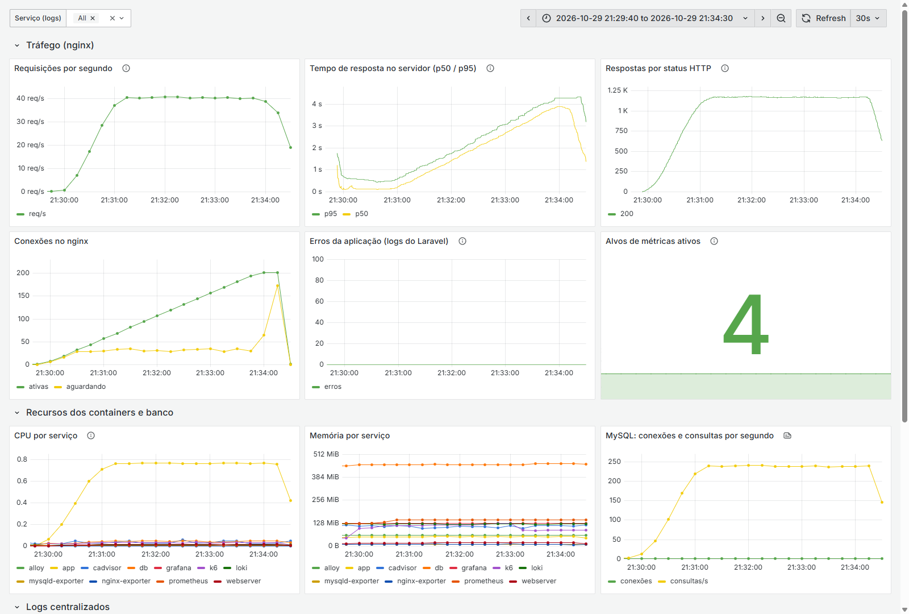
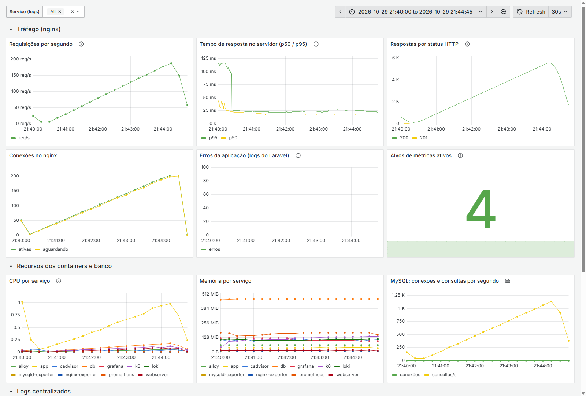
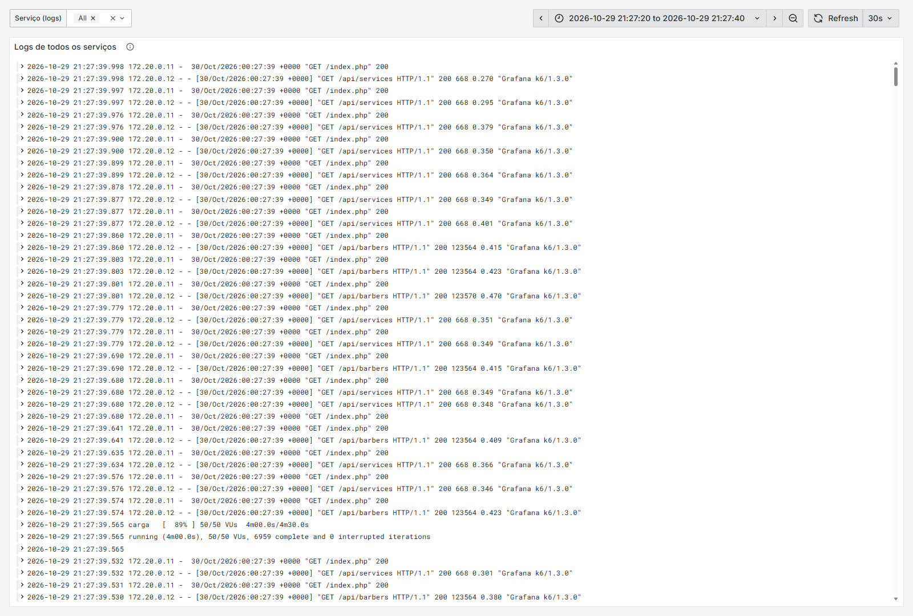

Relatório Técnico: Sprint 4 (Observabilidade, Testes de Carga e Go-Live)
Alunos: Eduardo Romano, Jose Coene, Leonam e Manoel
Disciplina: Computação em Nuvem
Data de Entrega: 30/10/2026
Resumo das Entregas da Sprint 4
Monitoramento e logs centralizados: Prometheus, Grafana, Loki e Grafana Alloy em containers. O painel "BarberFlow - Visão geral" mostra requisições por segundo, tempo de resposta, respostas por status HTTP, CPU e memória de cada container, conexões e consultas do MySQL e os logs de todos os serviços num só lugar.
Monitoramento na AWS como código:terraform/monitoring.tf define 5 alarmes do CloudWatch (CPU e verificação de saúde da EC2; CPU, espaço livre e conexões do RDS), grupos de logs com retenção de 14 dias, um painel e alerta por e-mail via SNS. O código foi validado com terraform validate e não foi aplicado (nenhum recurso foi criado na AWS).
Testes de carga e estresse com k6: 5 execuções em duas configurações, 54.163 requisições, 0% de erro.
Homologação: checklist de go-live com 12 itens executados no ambiente local.
Ambiente reproduzível:docker compose up -d sobe a API e todo o monitoramento com um comando. Para isso foram corrigidos a versão do PHP (8.2 para 8.4, exigida pelas dependências da API), o caminho da API no compose, a conexão com o MySQL e as migrations de barbers e clients, que não criavam as colunas name, email e phone.
Resultados do teste de carga
Configuração
Cenário
Req/s
p95
Erros
Meta
Original
Carga (50 usuários)
27,9
852 ms
0%
não atingiu
Original
Estresse (até 200 usuários)
34,3
3,96 s
0%
não atingiu
Otimizada
Carga (50 usuários)
40,0
95 ms
0%
atingiu
Otimizada
Estresse (até 200 usuários)
97,9
24 ms
0%
atingiu
Meta: 95% das respostas (p95) em menos de 500 ms e menos de 1% de erros. A configuração otimizada liga o modo de produção do Laravel e ajusta o cache do PHP, sem mudar código. Os números completos estão em load-tests/RESULTADOS.md.
Principais achados
Na configuração original, a vazão travou em cerca de 39 req/s e o tempo de resposta (p95) passou de 2 s quando os usuários simultâneos chegaram à faixa de 101 a 125. A máquina não era o limite: a API usou menos de 1 núcleo de CPU de 16. O limite era o tempo de cada requisição PHP com apenas 5 processos de atendimento.
Com a configuração otimizada, o p95 caiu de 852 ms para 95 ms com 50 usuários, e o sistema aguentou 200 usuários sem formar fila.
A rota GET /api/barbers devolve todos os barbeiros de uma vez. No teste, a resposta chegou a 123 KB e ficou mais lenta conforme a tabela cresceu. Recomendação: paginação.
Painéis de monitoramento

Figura 1. Estresse na configuração original: a vazão para em cerca de 40 req/s enquanto o tempo de resposta cresce com o número de usuários.

Figura 2. Estresse na configuração otimizada: a vazão acompanha os usuários até 200 e o tempo de resposta fica perto de 25 ms.

Figura 3. Logs centralizados: nginx e aplicação no mesmo painel, com o tempo de resposta de cada requisição.
Homologação (go-live local)
Dos 12 itens do checklist, 10 passaram sem ressalva. As duas ressalvas: as metas de desempenho só são atingidas com a configuração otimizada, e existe uma senha real em terraform/main.tf:23. Como o Terraform nunca foi aplicado, o go-live foi homologado no ambiente local, com os mesmos containers que iriam para a EC2. O checklist completo está em docs/go-live-checklist.md.
Recomendações antes de colocar na AWS
Tirar a senha do RDS do código (terraform/main.tf:23) e usar manage_master_user_password = true.
Criar security groups e o script de inicialização da EC2. Hoje ela sobe vazia e sem portas liberadas.
Ligar criptografia e retenção de backup no RDS, e atualizar o MySQL 8.0 (fim de suporte em 2026) para 8.4.
Usar a configuração otimizada em produção e paginar GET /api/barbers.